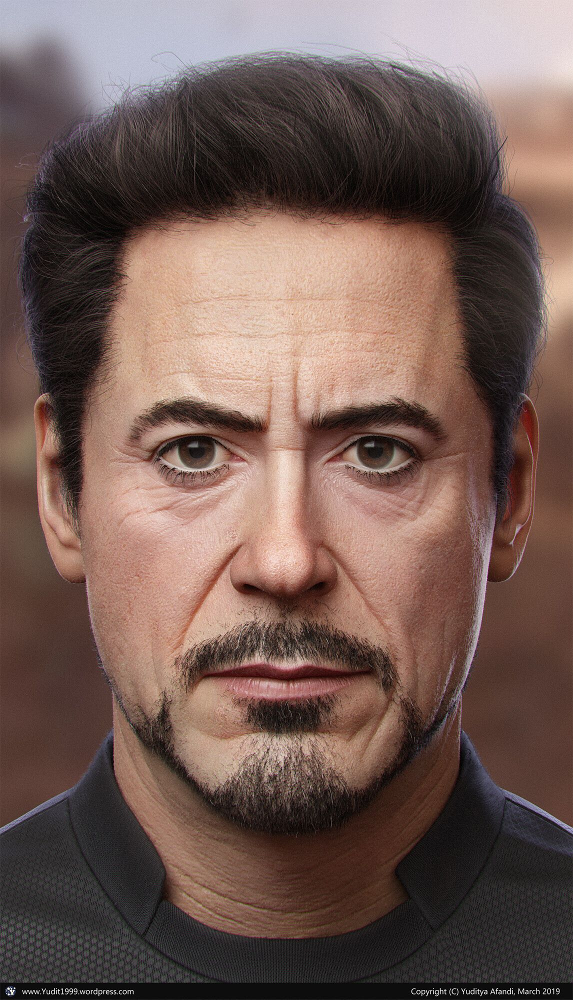

Tony Stark
Anthony Edward Stark is a character portrayed by Robert Downey Jr. in the Marvel Cinematic Universe (MCU) film franchise—based on the Marvel Comics character of the same name—commonly known by his alter ego, Iron Man. In the films, Stark is an industrialist, genius inventor, hero and former playboy who is CEO of Stark Industries. At the beginning of the series, he is a chief weapons manufacturer for the U.S. military, until he has a change of heart and redirects his technical knowledge into the creation of mechanized suits of armor which he uses to defend against those that would threaten peace around the world.
| Movies | Release Year |
|---|---|
| Iron Man One | 2008 |
| Iron Man Two | 2010 |
| Iron Man Three | 2013 |
Interesting Facts
- Stark has a piece of shrapnel near his heart
- He also built specialized suits for other environments like deep sea diving and space travel
- He graduated from MIT with multiple degrees when he was 21 years old.